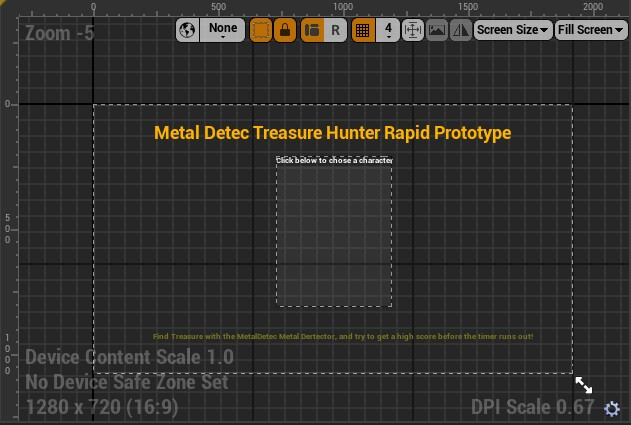
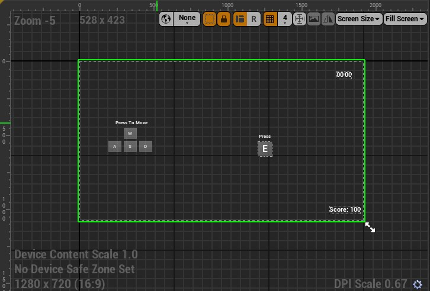

Example HUD
While developing for an early course where we learned how to use Blueprints in Unreal Engine, I was able to make multiple different HUDs for one game prototype. The treasure hunting game I developed wasn't the most sophisticated in gameplay, but the simplicity of the HUDs as you played did not detract from the overall experience. And, in some instances, such as where a player might not know the controls for general keybord games, those controls would appear on the screen if the player stood still for longer than a set period.
Other controls that were visible during game play indicated the correct key to interact with objects within the game. This is something that I forgot to include in the prototype game I developed to learn AI that would have made replaying that game more understandable. While developing the HUD, I was able to get acquainted with widgets as well as the generally used blueprints within UE.
Start Screen HUD
In-Game HUD
End Screen HUD